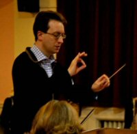

|
 |
| Home | About us | Professionals | Past Concerts | New Members | Rehearsal music | Sales | Gallery | Links |
The Society |
|
 |
The Haslemere Musical Society was founded in 1923 and gave annual concerts up until 1939. Since then it has performed two or three concerts a year of classical works, and it now has a considerable following. The H.M.S. is one of comparatively few societies to have both an orchestra and a choir. The programmes have included choral works like The Dream of Gerontius, Messiah and Creation, and the symphonies of Brahms, Beethoven and Tchaikovsky; also a variety of shorter and more modern works. We recently gave the first performance of a new work (Lord of all Creation) by our last conductor Darrell Davison. Both choir and orchestra rehearse on a Monday evening at 7.30 in the Haslemere Hall, between September and May. The orchestra usually meets for a number of summer sessions as well, working with invited conductors. |
Musical Director: James Ross |
|
|  |
James Ross studied at Harrow School, London, and Christ Church, Oxford University, where he read Modern History, then took a master’s degree in music and a doctorate in French opera, winning the Sir Donald Tovey Prize. He was a finalist in the 1998 BBC Philharmonic Conducting Competition and since then he has conducted over 800 works in fourteen countries throughout Europe, North America and Asia. In addition to Haslemere Musical Society, current music director positions include Sidcup Symphony Orchestra, Oxford Opera Company, Welwyn Garden City Orchestra and Chorus, and previously St. Albans Symphony Orchestra and Oxford University Sinfonietta. He has performed in leading UK concert halls including Symphony Hall, Birmingham, St. John’s Smith Square, London, and the Sheldonian Theatre, Oxford. RepertoireRepertoire performed includes much symphonic work (e.g. almost all of Beethoven, Schubert, Schumann, Tchaikovsky, Dvorák, Brahms); oratorios (e.g. Elgar, The Dream of Gerontius); and major 20th-Century works including Stravinsky, The Rite of Spring, Bartók, Music for Strings, Percussion and Celesta; and Schoenberg, Pierrot Lunaire. Soloists range from baritone Sir Thomas Allen to former BBC Young Musician of the Year Guy Johnston; operas include works by Bizet, Britten, Mozart, Tchaikovsky, Verdi, Puccini, Wagner and Janacék. He has also conducted much specialist French repertoire and has a strong interest in contemporary music. Numerous first performances include New Music Days with members of City of London Sinfonia, supported by the =Arts Council of England. |
{kind=link}
For further information, contact the Secretary of the H.M.S., Sue Ecclestone, Tel: 01428-605612,
or the Orchestra Secretary, Marion Bagshaw, Tel: 01428-656129.
Where to find us
Haslemere Hall,
Bridge Road,
Haslemere,
Surrey,
England GU27 2AS
For a map showing the location of Haslemere Hall, click here.